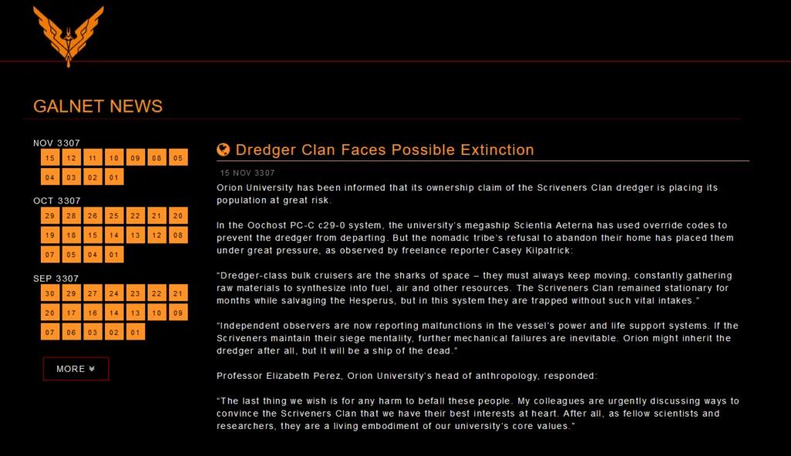

Orion University claim that the Scriveners Clan are the living embodiment of the University’s core values. If this were the case then they should not insist on playing chicken with the lives of the Scriveners and their unique cultural heritage. Far from being the actions of an organisation concerned with the welfare of the Scriveners Clan, this is clearly the action of an aggressor that has one goal only. To take possession of the Scriverners’ heritage: The Core.
We urge that the University stop playing with people’s lives and release the lock on the Dreger’s propulsion systems so that the Scriveners Clan can move their ship to a location where they can gather materials to maintain the vital systems of their vessel.
In the meantime, the Scriveners Clan and their ship must be protected at all costs.
Understandably they do not trust us enough to open their docks, however we would urge all independent pilots to deliver cargo and raw materials straight into the maw of the dredger so that the Scriveners can keep their power and life support functioning.
Please bring anything you can. Water, fuel, raw materials, perhaps you have an old sidewinder taking up space in your carrier bring it all, the Scriveners will be able to use it.
As well as providing humanitarian aid through cargo drops, we also need tugs. We ask pilots with large ships to join forces and we will push the dregder to a more favourable orbit away from the Orion University ship.
Your junk and tugging could save lives.
